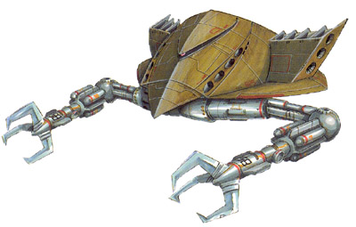

| MA-05 Bigro High-Speed Anti-Warship Zeon Duchy Mobile Armor |
|
|  | |
General and Technical Data |
|
|
Model number: MA-05 Code name: Bigro Unit type: high-speed mass-production mobile armor Operator: Zeon Duchy Dimensions: overall length 45.5 meters, overall height 26.3 meters Weight: empty weight 125.5 metric tons; max gross weight 229.8 metric tons Construction: High Tensile Steel Powerplant: Minovsky type ultracompact fusion reactor, output rated at 17800 kw Propulsion: rocket thrusters: 136100 kg total Performance: maximum thruster acceleration 0.59 G Equipment and design features: sensors, range 111000 meters; Minovsky particle scattering system Fixed armaments: large mega particle cannon, mounted in firing port on main body; 2 x 4-tube large missile launcher, 3 rounds per tube, mounted on main body |
|
| Technical and Historical Notes | |
|
Years before the opening of the One Year War, Zeon engineers sought out the creation of a revolutionary new mobile weapons platform. The competing Zeonic and MIP corporations both fielded a prototype; MIP's X-1 fighter proved a magnificent success at maintaining a high mobility over conventional designs, but it consumed far too much fuel. The Zeonic company's prototype (which vaguely resembled the mobile suit design that would later be standardized), utilizing the Active Mass-and-Balance Auto-Control system, was accepted by the Zeon military, leaving the MIP X-1 to collect dust.
As the One Year War progressed, Zeon engineers looked to expand their successful mobile armor program to the space theatre. Gihren Zabi demanded a quick rollout, so in an attempt to hurry along development, Zeon developers called over the original MIP development team to recommission their X-1 fighter with the AMBAC system. The result was the MA-05 Bigro mobile armor.
Intended for high-velocity attacks against capital ships, the Bigro places a lot of emphasis on heavy firepower and speed. Its primary weapon is a large, powerful mega particle cannon, usually concealed inside a beak-like firing port. Twin quadruple large missile launchers flank the cannon, giving the Bigro serious punch over long range. Its claw arms, initially designed to facilitate the AMBAC system, also proved to be moderately effective tools against close-combat tactics of enemy mobile suits.
|
 RPG quick stats sheet
RPG quick stats sheet | Weapons and Features | |
|
|
|